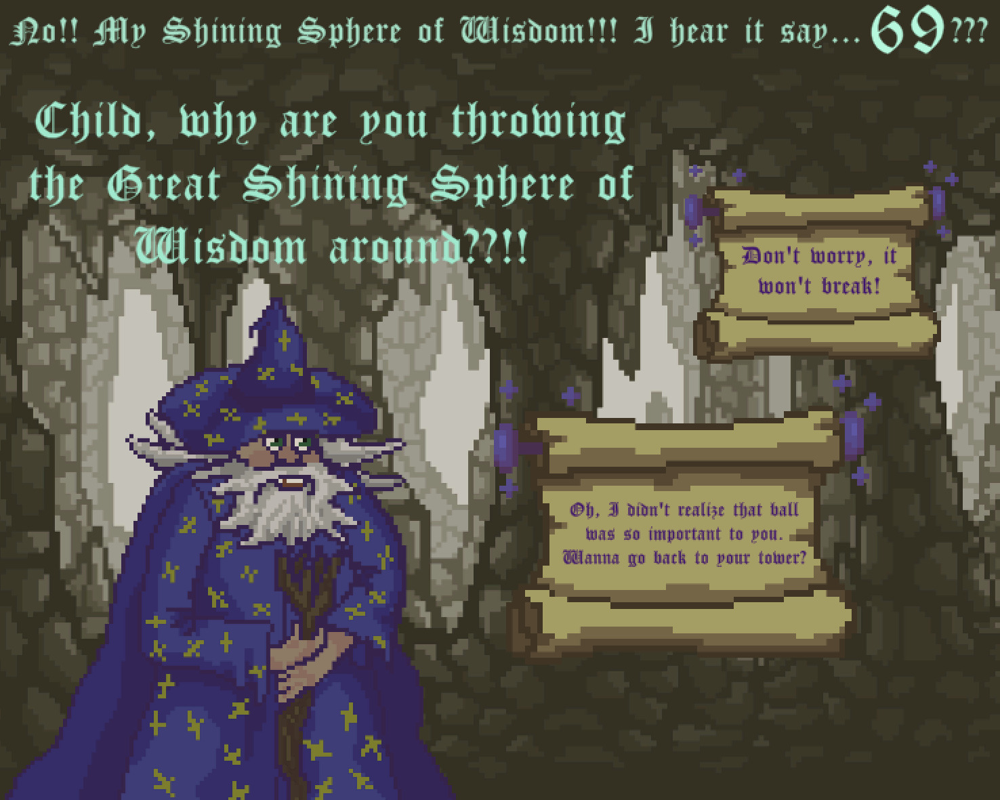
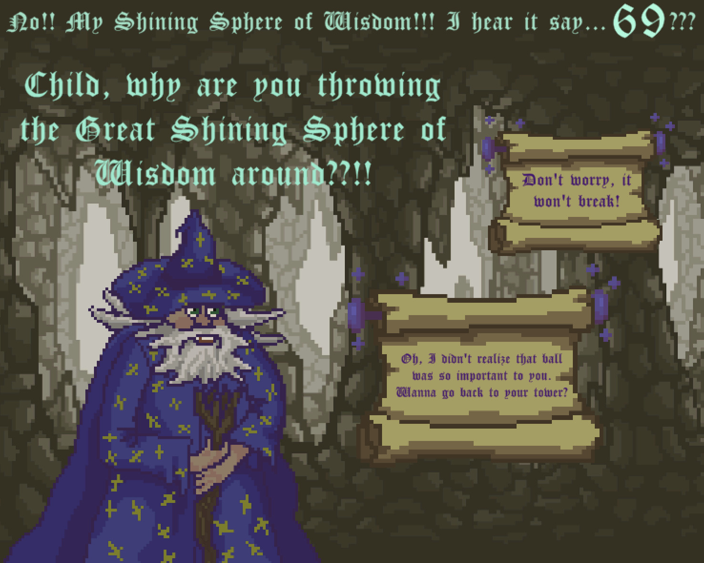
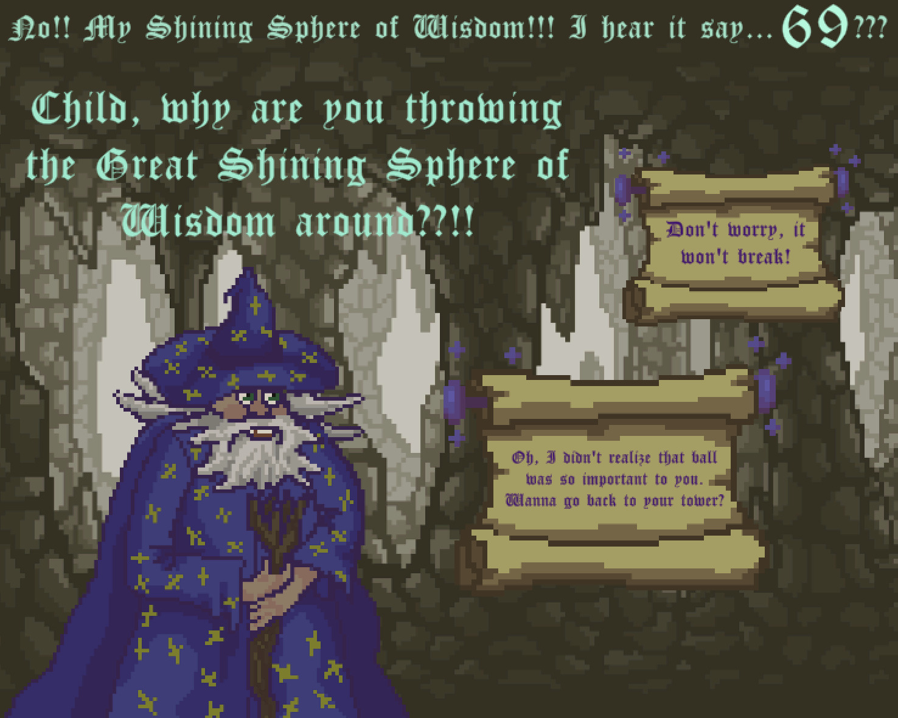
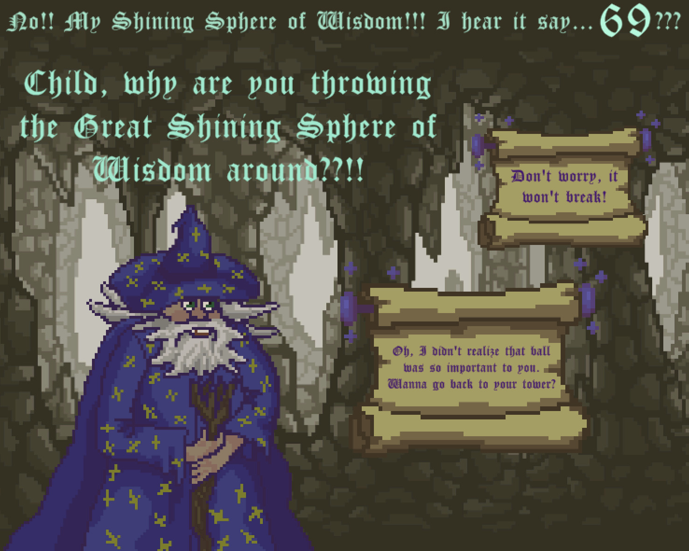

Wizard's Dream

 



I am a lost and forgotten shadow
Among crystals and ancient debris.
All I do is slowly wander around -
Around my sleeping King.
He created my essence to love and to hold
A feeling I’ve still yet to feel.
What happens when you are embraced by a stone?
I’ll learn it in over a year…
* * *
In the endless tunnels beneath the earth,
Where no other shadow has ever set foot,
I can’t help but wonder if loving can hurt,
If loving can crush a shadow to soot.
The heart of my King is of gold, I’ve been told -
He’ll forgive me for my petty fears.
But, in the soft golden light of his soul,
Any shadow would disappear.
At the end of the thousandth tunnel,
Bright blue light comes sometimes from above -
A route of escape for a hard, loveless shadow…
Though I used to have doubts,
I’m embracing my crown -
And I’ll melt in my golden King’s love.